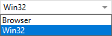
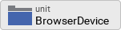

Device integration: Hello world from our device
In the last chapter, we made our component truly reusable by adding properties to it. Afterwards we completed our GUI which now contains two units, one for ringing a bell and another for showing the weather forecast. Unfortunately, there’s no real function behind the push buttons of both units yet. We will address this in the following chapter.
GUI builder and platform packages
Embedded Wizard is a GUI framework builder that allows you to build GUI platform independent applications that can deployed on many different target systems. This is achieved by using the programming language Chora for all programming tasks related to the GUI. Other than that, Embedded Wizards strictly refrains from any access to the underlying device to ensure platform independence. However, when building embedded devices, the main purpose of the GUI application is to enable and facilitate interaction with the underlying hardware. So how does Embedded Wizard integrate with those devices? That’s where the concept of platform packages comes into play. Embedded Wizard offers platform packages for many different hardware platforms (STM, NXP, TI, Raspberry Pi, …). A platform package consists of a code generator, a resource converter, a graphics engine and a runtime environment for the specific platform. You may think of the platform package as a link between the GUI and the hardware. Applications implemented in the programming language Chora can be run on any particular platform if a platform package exists for that platform.
Adapting the project structure
As explained above, there is a strict separation between the GUI application and the device, represented by one or more platform packages. Let’s start and reflect that separation in our application structure, too:
-
Click on the
 Project tab (the first tab from the left).
Project tab (the first tab from the left). -
Identify the note frame that holds the icon
 that represents the application unit. Rename the heading text of this frame from Project Units to GUI project. To do so, change the property Caption of the note frame using the inspector window.
that represents the application unit. Rename the heading text of this frame from Project Units to GUI project. To do so, change the property Caption of the note frame using the inspector window. -
From the gallery templates window to the left, drag an element
 Annotation Group over to root canvas. Rename the group to Middleware.
Annotation Group over to root canvas. Rename the group to Middleware. -
Drag an element
 Unit over to root canvas, add the new unit inside the note rectangle you inserted in the previous step. Rename the unit to Device.
Unit over to root canvas, add the new unit inside the note rectangle you inserted in the previous step. Rename the unit to Device. -
Drag another
Unit into the same note rectangle Middleware. Rename the unit to BrowserDevice. -
Drag a third
Unit into the note rectangle Middleware. Rename the unit to TargetDevice.
The structure of your project should now look as shown in Figure 1 below:
Adding a interface device class
Let’s add content to the newly inserted units! We start with adding a device class interface first:
-
Double click on the icon
 , representing the Device unit. This will open the unit in a new tab.
, representing the Device unit. This will open the unit in a new tab. -
In the gallery templates window left to the main composer window (Alt+1), either click on the folder header Device or press key D, this will open the folder and will present all device subitems.
-
Click on the item
 Device interface, and drag an instance over to the component’s canvas. Place the element in the upper left corner of the canvas.
Device interface, and drag an instance over to the component’s canvas. Place the element in the upper left corner of the canvas.
By dragging over the device interface to the canvas, two new objects were inserted:
-
the DeviceClass element to the left, which represents the class where we will store device related class members like commands, properties and so on, and
-
the Device autoobject element associated to the DeviceClass element. This autoobject represents the globally available instance of the device class. This autoobject represents Embedded Wizard’s implementation of the singleton pattern (if you are familiar with Java, you may think of the Device class as a static class). Using the Device autoobject, any GUI element has direct access to the device class and its members, which is very handy. We will use this autoobject soon.
Your screen should now look like illustrated in Figure 2 below:
Let’s go ahead and review and adapt the members of the newly inserted device class interface:
-
Double click on the icon
 , representing the Device autoobject. This will open the Device class in a new tab. You will see that the canvas was prepopulated with several class members already.
, representing the Device autoobject. This will open the Device class in a new tab. You will see that the canvas was prepopulated with several class members already. -
Identify the note group that holds the icon
 representing the Command method and rename the caption of this note group from Example of an interface to perform an operation in the device to Command(s).
representing the Command method and rename the caption of this note group from Example of an interface to perform an operation in the device to Command(s). -
Rename icon
representing the Command method to RingTheBellCommand. -
Double click on the renamed command. In the code editor window, you will see the method’s signature, followed by many lines of template Chora code.
-
Have a look at the method signature of the RingTheBell command.
Device commands are represented by regular methods. Like in all programming languages, a method can take parameters and can have a return value. Have a look at the signature of the RingTheBellCommand method shown at the top of the code editor:
method int32 Device::DeviceClass.RingTheBellCommand( arg int32 aParameter1, arg bool aParameter2)As you can see the method currently takes an int32 value as first argument and a boolean value as second argument. Also, the method returns an int32 value. These settings are not what we want, our simple RingTheBellCommand method does not need any parameters and won’t return anything, so the return type should be void. Let’s go ahead and adjust the method’s signature to our needs:
-
In the top title line of the code editor containing the method signature, you can see a small downwards triangle. Click on this triangle to show a frame where the method’s return value and parameters are listed in separate lines.
-
Right click on the first method parameter arg int32 aParameter1 to invoke the context menu on this parameter. From this menu select the menu item Delete to remove the first parameter.
-
Right click on the remaining method parameter arg bool aParameter2. From the context menu shown, select Delete to remove this parameter, too.
-
Right click on the first line that shows the method’s name method int32 RingTheBellCommand. From the context menu shown, select Edit and change the return parameter from int32 to void.
Once we adjusted the signature of the method, let us adjust the body of the method, too. Remove all template code and put in one single line:
trace "The device class of the GUI is an interface only and cannot run any device commands! Please implement the command in a variant class!";As said, Embedded Wizard does not have access to the underlying device and therefore cannot advise the device to say Hello to us. We have to implement this in a derived class, we will do so shortly.
Since we have set up a device and a command now, let’s use it and wire the push button action of the bell to that newly created command:
-
Bring up the contents of the main application inside the tab Application::TutorialApplication.
-
Double click on the icon
 representing the slot method RingTheBellSlot. Inside the code editor, you will see the line
representing the slot method RingTheBellSlot. Inside the code editor, you will see the line trace "Sorry, the GUI cannot ring the bell!";.
Change this code to
Device::Device.RingTheBellCommand();| Embedded Wizard code editor ships with integrated code completion, which is very handy and might prevent you from typos when authoring code inside the code editor. To test it out, simply write Device:: into the editor and should see a list of available completions to the given Device unit name you just typed in. |
That’s how we call a method by code: specify the class name (Device::DeviceClass) first, then append the method name (RingTheBellCommand), prepended with a dot and terminated with empty parentheses. Now run your code using the prototyper, and you should see a trace message informing you that the GUI cannot run any device commands. Obviously, we are not at the end, so read on!
Adding another profile
As already explained above, there is a strict separation between the GUI application and the device, represented by one or more platform packages. Two platform packages are included in the Embedded Wizard installer and are available out of the box:
-
the Tara.Win32.xxx platform package. This is the default platform package that allows you to run the application on your Windows platform. You were using it already when you launched the prototyper to run your application or component (xxx stand for one of the available color formats, either Index8 or RGBxxxxx).
-
the Tara.WebGL.RGBA8888 platform. This WebGL/Javascript platform package allows you to run the GUI in any WebGL enabled browser. That’s especially handy for this tutorial since you don’t need any hardware to follow the instruction given.
| Besides the Win32 and the WebGL packages there are many platform packages available to target real hardware (STM, NXP, TI, Raspberry Pi, …). For each of these platform packages, a separate installer exists. You have to obtain and run this installer to make the associated platform packages available inside Embedded Wizard. |
If we want to make use of more than one platform package inside our project, we have to have an associated profile on the Projects tab for each package you would like to use. So let’s add another profile that allows us to switch between the Win32 package and the WebGL package. We then use the latter package to output Hello, world! on the browser device, more specifically on the web console of the browser. The journey goes on …
-
Click on the
Project tab (the first tab from the left). -
Identify the note frame with the caption Profile configuration, it only contains the icon
 representing the default profile. Select this profile and have a look at the inspector window. You will realize that the attribute PlatformPackage of the profile has the value Tara.Win32.RGBA8888 assigned. To reflect this, rename the profile from Profile to Win32 using the F2 key.
representing the default profile. Select this profile and have a look at the inspector window. You will realize that the attribute PlatformPackage of the profile has the value Tara.Win32.RGBA8888 assigned. To reflect this, rename the profile from Profile to Win32 using the F2 key. -
From the gallery templates window to the left, drag the element
 Profile inside the Chora folder over to the canvas and place it underneath the existing profile Win32 . Rename the profile to Browser. Resize the note frame and rearrange the elements on the canvas so that the layout looks nice again.
Profile inside the Chora folder over to the canvas and place it underneath the existing profile Win32 . Rename the profile to Browser. Resize the note frame and rearrange the elements on the canvas so that the layout looks nice again. -
Our new profile should be associated with the WebGL platform package, so inside the inspector window, change the value of the attribute PlatformPackage from Tara.Win32.RGBA8888 to Tara.WebGL.RGBA8888.
-
Inside the inspector window, change the value of the attribute ScreenSize to <480,320>.
-
Also change the value of the attribute OutputDirectory to ../WebGL. This defines the directory where all the code for our website will be stored once we build the project.
-
Optionally, you may fill the attributes ApplicationName and ApplicationTitle with the values TutorialApplication or "Embedded Wizard sample application", respectively. For the last value, don’t forget the surrounding double quotes here or you may run in trouble.
The Profile section of your project should now look as shown in Figure 4 below:

|
Now that we have two profiles defined, we can switch between these two profiles using the Profile dropdown list located in the second row of the toolbar, placed right beneath the icon for building the selected profile and the icon

Figure 5. Dropdown list for switching between different profiles
|
Adding a browser device class variant
We already added an interface device class to our project. However, this interface device class is not meant to run any command on the device. The actual execution of the command on the device will happen inside a class variant. Variants are an extremely powerful concept of Embedded wizard, in the example below we use it to manage code execution on different platform packages. Variants are useful in various other scenarios, you may use them to manage variants of your application for different screen resolutions or if you want to implement a different look and feel for one or more application components. Let’s go ahead and add and populate a class variant for the use with browser devices:
-
Click on the
Project tab (the first tab from the left). -
Identify the note frame with the caption Middleware which holds three device units, the Device unit, the BrowserDevice unit and the TargetDevice unit.
-
Double click on the icon , representing the BrowserDevice unit. This will open the empty unit inside a new tab.
-
Press Alt+2 to select the gallery browser window, left to the main composer window. Alternatively, you may mouse click at the second tab Browser at the very top of the window.
-
In the search field immediately below the two tabs, type in Device to shorten the class list.
-
Right click on the
 Device::DeviceClass class to invoke the context menu on this class. From this menu select the menu item Copy to copy the class to the clipboard.
Device::DeviceClass class to invoke the context menu on this class. From this menu select the menu item Copy to copy the class to the clipboard. -
Right click on the empty canvas in the main window to invoke a context menu. From this menu select the menu item Variant paste to insert a class variant of the device class. Alternatively, you may select the element and drag it over to the canvas while keeping Ctrl+Shift+Alt pressed. Note the letter V in the icon
 of the newly inserted class which marks the class as a class variant.
of the newly inserted class which marks the class as a class variant. -
Rename the newly inserted variant class to DeviceClassBrowser using the F2 key.
-
In the inspector window, locate the attribute line VariantCond. The right hand value cell of this attribute line holds a small downwards triangle at the right hand side. Click on this triangle to open the dropdown list populated with all profiles of your project. Deselect all profiles except for the profile Browser and click on the lower button labelled with a check mark to confirm your choice. With this setting in place, the class variant is now associated with the Browser profile only.
Your screen should now look as shown in Figure 6 below:
Implementing a different behavior for the browser device class variant
We want to make the newly created class behave differently, so there’s still some work to do:
-
Double click on the icon
 , representing the recently add device class variant. This will open the empty DeviceClassBrowser class variant inside a new tab.
, representing the recently add device class variant. This will open the empty DeviceClassBrowser class variant inside a new tab. -
From the gallery templates window to the left, drag an element
Annotation Group over to root canvas. Rename the group to Command(s).
Have a look at the inspector window and you will see the method RingTheBellCommand. This is the command we previously added to the Device class. Since the variant class is derived from this class, it has access to all its class members, including the RingTheBellCommand. The light grey colour of the method name marks the method as inherited. We now want to implement a different behavior for this command in the variant class, we can do so by overriding the method in the variant class:
-
In the inspector window, right click on the method RingTheBellCommand to invoke the context menu on the method. From this menu select the menu item Override class member. A method element with the same name RingTheBellCommand will appear on the canvas.
-
We are now able to specify different code in the method body of the newly created method: double click on the icon
 representing the newly inserted method RingTheBellCommand. Inside the code editor, you will see the line
representing the newly inserted method RingTheBellCommand. Inside the code editor, you will see the line // TO DO: Write your code here …. That’s great, we can add our custom code here which will be executed only once the browser device class variant was called!
Using the code editor, add the following code inside the method body:
trace "Command on browser device was called";
$if (!$prototyper)
native
{
// Javascript code executed inside the browser
console.log("Hello, world!");
console.log("We will be able to ring the bell shortly");
}
$endifEventually, we are revealing how Embedded Wizard can execute native code on the device: by making use of the native statement of the Chora language. Any code inside this statement remains untouched and is passed as is to the device. Since we are communicating with browser devices, we have to put JavaScript code inside the native statement. More specifically, we make use of the console.log() method which outputs arbitrary text to the browser’s console.
The construct $if (!$prototyper) … $endif around the native statement prevents the native code block from being executed once we are using the prototyper for previewing our components or our applications. By adding this statement, we prevent Embedded Wizard from raising a warning that native code will the ignored during prototyping.
|
The BrowserDevice class variant should now look like as depicted in Figure 7 below:

Running the application inside a web browser
Hooray, we are now ready to run the application inside a web browser of your choice! To do, so, we have to build the browser specific code first:
-
Switch to the Browser profile using the dropdown list depicted in Figure 5 above.
-
Click on the the icon for building the application for the selected Browser profile. The generated code will be written into the output directory WebGL on the root application level. We specified this output directory when creating the Browser profile.
-
Locate the output directory on your local file system. We contents of this directory should look like as depicted in Figure 8.
-
Double click on the file TutorialApplication.html inside your WebGL output directory. This will open your default web browser with a window that runs your application:
| Due to security concerns, the Chrome browser does not allow to load websites locally. We do not recommend the use of this browser for local preview of our application since most likely, you are running into trouble. |
-
Open the Javascript console of your browser. The way how to achieve that depends on your browser:
-
Firefox: From the menu, select or use the keyboard shortcut Ctrl+Shift+J
-
Microsoft Edge: Use the keyboard shortcut F12 to open the Developer Tools, then click on the Console tab or press Ctrl+2 to invoke that tab.
-
-
Inside the application in your browser window, click on the push button labelled Ring. From your browser console, you should be greeted with Hello, world!:

Finalizing device actions
Make the device beep eventually
In order to get results quickly, we made use of the console.log() inside the RingTheBell command. But we certainly can do better here, let’s move on and let the bell ring!
-
In the body of method RingTheBellCommand, remove the two lines with console.log statements and replace them with a single code line with a mere function call
beep();. The code in the method body should now read:
trace "Ring the bell command on browser device was called";
$if (!$prototyper)
native
{
// Javascript code executed inside the browser
beep();
}
$endifThe function beep() does not exist yet, so let’s create it. We intentionally move this function out to the unit BrowserDevice in order to operate with small, separated code units.
-
Select or open the tab with the unit BrowserDevice, the unit currently holds the variant class DeviceClassBrowser only.
-
Click on the Templates windows to the left or invoke it by using the keyboard shortcut Alt+1. Press key c to open the folder Chora and show its elements.
-
Identify the item Inline code, representing a native code snippet. Click on the element, drag it into the main area and place it underneath the existing DeviceClassBrowser element.
-
Rename the newly inserted inline code element to InlineFunctions using the F2 key.
The BrowserDevice unit should now look like as depicted in Figure 11 below:
-
Double click on the icon representing the inline code element. Inside the code editor, you will see a single code line
// TO DO: Write your code here …. -
Using the code editor, insert the function beep() inside the body of the inline element:
// reuse context since browsers limit the number of concurrent audio contexts
var audioContext = new AudioContext();
function beep() {
var oscillatorNode = audioContext.createOscillator();
var gainNode = audioContext.createGain();
oscillatorNode.connect(gainNode);
oscillatorNode.frequency.value = 500;
oscillatorNode.type = "square";
gainNode.connect(audioContext.destination);
gainNode.gain.value = 1.5;
oscillatorNode.start(audioContext.currentTime);
oscillatorNode.stop(audioContext.currentTime + 0.2);
}
Test that your device makes beep eventually:
-
Make sure the profile Browser is selected and rebuild your project using the F8 key.
-
Go to your web browser and issue a page refresh the browser page displaying your application using the F5 key.
-
Click on the push-button labelled Ring and your PC should beep eventually, provided, it has a speaker built in.
Presenting the weather forecast on the browser device
We are almost at the end of this long chapter! One task is left, however: we have to teach the browser device to display the weather forecast. That’s pretty easy, though:
-
Select or open the tab with the variant class DeviceClassBrowser, this class currently holds the command method RingTheBellCommand only.
-
In the inspector window, right click on the method ShowForecastCommand to invoke the context menu on the method. From this menu select the menu item Override class member. A method element with the same name ShowForecastCommand will appear on the canvas. Rearrange elements so that the layout looks nice again if needed.
The final BrowserDevice class variant should now look like as depicted in Figure 12 below:

-
We are now able to specify different code in the method body of the newly created method: double click on the icon representing the newly inserted method ShowForecastCommand. Inside the code editor, you will see the line
// TO DO: Write your code here …. Again now we can add our custom code here which will be executed only once the browser device class variant was called.
Using the code editor, add the following code inside the method body:
trace "Show forecast command on browser device was called";
$if (!$prototyper)
native
{
// Javascript: redirect to weather forecast page
window.open('https://www.cnn.com/weather', '_self');
}
$endifWe are done! To test the newly added weather forecast functionality, rebuild the project and reload the application page in your web browser. You should now be able to both make your device beep and to view the weather forecast inside your browser. Pretty cool, isn’t it?
Let’s move on to the next chapter, there’s still much more to explore!